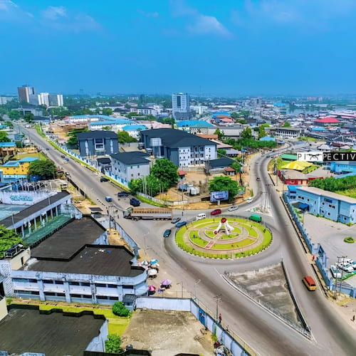

Port Harcourt is the capital and largest city of Rivers State, located along the Bonny River in the oil-rich Niger Delta region of Nigeria. Often referred to as "Garden City" because of its abundant green spaces, it is one of the country's most vital economic and commercial hubs.
